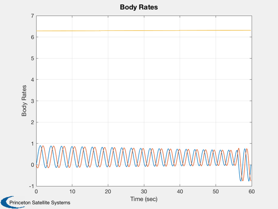

Simulate the AKM firing for the ComStar spacecraft.
The AKM model includes the time variation of the AKM pressure. The dynamics model includes time varying mass and inertia which don't have much effect since the exhaust carries away the momentum so the spacecraft rate is nominally unperturbed.
Since version 2. ------------------------------------------------------------------------- See also FAKM, ComStar, QTForm, Constant, NPlot, Plot2D, TimeGUI, RK4, SkewSymm -------------------------------------------------------------------------
Contents
%------------------------------------------------------------------------------- % Copyright 1994-1998 Princeton Satellite Systems, Inc. All rights reserved. %-------------------------------------------------------------------------------
Global for the TimeGUI
%------------------------ global simulationAction simulationAction = ' ';
Constants
%---------- rPSToRPM = Constant('Rad/Sec to RPM'); rPMToRPS = Constant('RPM to Rad/Sec'); degToRad = Constant('Deg to Rad'); radToDeg = Constant('Rad to Deg');
Momentum and Damper Wheel Parameters
%------------------------------------- inr = ComStar('TO Inertia'); inrAKM = ComStar('AKM Fuel Inertia'); inrMWA = ComStar('MWA Inertia'); inrDamper = ComStar('Damper Inertia')*.01; cM = ComStar('TO CM'); cMAKM = ComStar('AKM Fuel CM'); mAKM = ComStar('AKM Fuel'); hMWA = ComStar('MWA Inertia')*ComStar('U MWA')*200*rPMToRPS*0; uDamper = ComStar('U Damper'); cDamper = ComStar('C Damper');
AKM Inertia contribution
%-------------------------
sDCM = SkewSymm(cMAKM-cM);
inrAKM = inrAKM - mAKM*sDCM*sDCM;
AKM parameters
%--------------- angMis = 0.01*degToRad; % 0.01° AKM misalignment tBurn = 56; uAKM = [0;sin(angMis);cos(angMis)]; thrustAKM = 7895; % lbf nominal 70°C mDot = -mAKM/tBurn; rAKM = [0.1;0.1;0] - cM; % 0.1" c.m. spin-axis offset sRAKM = SkewSymm(rAKM); inrDot = -inrAKM/tBurn; mRDot = -inrDot; tAKM = sRAKM*uAKM*thrustAKM;
Input parameters
%-----------------
w = [0;0;60]*rPMToRPS;
nSim = 3000;
nPMax = 10;
nPlot = nSim/nPMax;
dTSim = 0.02;
x = [[1;0;0;0];w;0];
nP = 0;
kP = 0;
Plotting arrays
%----------------
xPlot = zeros(length(x),nPlot);
aPlot = zeros(1,nPlot);
tPlot = zeros(1,nPlot);
t = 0;
uInt = 0;
Initialize the time display
%---------------------------- tToGoMem.lastJD = 0; tToGoMem.lastStepsDone = 0; tToGoMem.kAve = 0; [ ratioRealTime, tToGoMem ] = TimeGUI( nSim, 0, tToGoMem, 0, dTSim, 'ComStarAKM' );
Run the simulation
%--------------------- for k = 1:nSim; % Display the status message %--------------------------- [ ratioRealTime, tToGoMem ] = TimeGUI( nSim, k, tToGoMem, ratioRealTime, dTSim ); % Assume that the desired burn direction is along the inertial +z axis %--------------------------------------------------------------------- uDot = [0 0 1]*QTForm(x(1:4),uAKM); if t <= tBurn, uInt = uInt + dTSim*uDot; end % Plotting %--------- if nP == 0, kP = kP + 1; xPlot(:,kP) = x; tPlot(kP) = t; aPlot(kP) = acos(uDot)*radToDeg; nP = nPMax - 1; else nP = nP - 1; end % Integrate the RHS %------------------ x = RK4(@FAKM,x,dTSim,t,inr,inrDot,mRDot,hMWA,inrDamper,cDamper,uDamper,tAKM,tBurn); t = t + dTSim; % Time control %------------- switch simulationAction case 'pause' pause simulationAction = ' '; case 'stop' return; case 'plot' break; end end TimeGUI( 'close' )
Plot
%------ fprintf(1,'Burn efficiency = %12.8f\n',uInt/tBurn); j = 1:kP; Plot2D(tPlot(j),xPlot(5:7,j),'Time (sec)','Body Rates') %-------------------------------------- % PSS internal file version information %--------------------------------------
Burn efficiency = 0.99540916